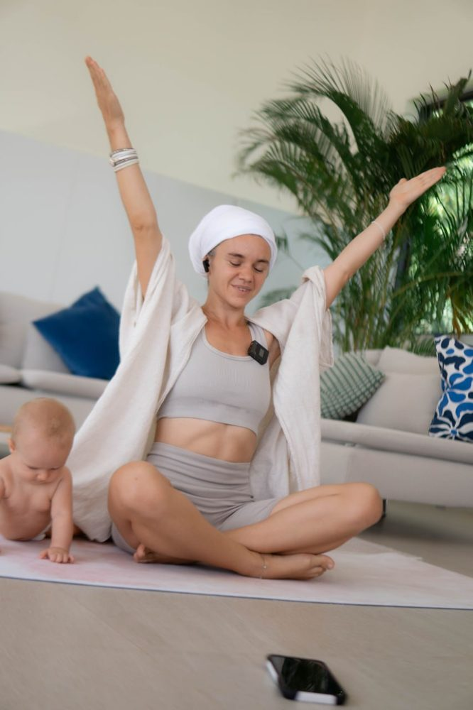

Kateryna Jeeva
Не знаєте, що вам підійде? Напишіть — підкажу.
Не знаєте, що вам підійде? Напишіть — підкажу.


Робота з конкретним запитом: тривога, страхи, образа, розставання. 1,5 години.
Детальніше →
Курс у групі до 5 людей: теорія, практика й власні сесії під супервізуванням.
Детальніше →
Капсули, настоянка й відбиток плаценти для відновлення після пологів.
Детальніше →
Групові заняття 75–90 хвилин. Підходять і новачкам.
Розклад →«Хочу выразить благодарность Кате за сессию! Было душевно, тепло и по-человечески.»
«Kate has such a beautiful energy, goddess mother of 3 kids, she encapsulated my placenta and I cannot recommend her enough.»
«Сесії дійсно дуже глибинні і допомагають дуже сильно!»
Відповідаю в WhatsApp і Telegram українською, російською чи англійською.